Portafolio 2026
Fotografía y video
Ciudad de Guatemala — @portico.fa
Pórtico es un estudio de fotografía y video de arquitectura, interiorismo y obra en Ciudad de Guatemala. Trabajamos con despachos de autor, interioristas, desarrolladores y corredores que necesitan que su obra se vea a la altura de su diseño.
Oficina para una empresa de logística marítima y aérea: estaciones de trabajo abiertas, salas privadas en vidrio y luminarias lineales curvas que ordenan el espacio. El color marca cada función: turquesa, naranja y amarillo.
Kiosco de madera curvada para una librería. Dos brazos curvos forman un recorrido interior: el cliente entra al kiosco en lugar de mirarlo desde fuera.
Piezas de vidrio iridiscente suspendidas sobre muros curvos. El recorrido en video sigue cómo la luz cambia el color de cada pieza según el ángulo y la hora.
